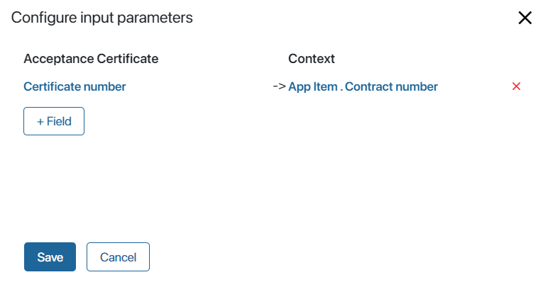

This widget allows you to add a button to a page, app or task form. You can use a script to define the on-click behavior of the button.
To configure the widget, drag it from the right-side panel of the interface designer to the modeling canvas or click + Widget. Read more in the Form templates article. In the pop-up window that opens, configure the widget’s settings.
Main tab
- Button color. Select what the button will look like.
- Title/Tooltip*. Add a text that will be shown on the button. You can link this field with a context variable by clicking
 .
. - Icon. Select an icon to be shown next to the button.
- Hide start form. This option is used for buttons for launching business processes. Enable it if you don’t want the process start form configured in the start event to be displayed upon button click. The process execution will start with the activity placed directly after the start event. You can link the field with a context variable by clicking .
- Action type. Select the action that will take place when a user clicks the button:
- Run a script. Select a function created on the the Scripts tab or create a new one.
- Select a preset action. Select one of actions available in the system, for example, Restrict access to data.
- Start a process. Bind a process to the button to run a process instance.
- Create an app item.
- Open a link. Configure a link to open when a user click on the button.
Run a script
When a user clicks the button, a predefined script runs. You can use this option if you need to display information depending on a certain condition.
Select a script from the Scripts tab. You can also move to creating a script by clicking Create, entering the function’s name, and clicking Open. Read more about creating client and server scripts in the Scripts in widgets article.
Run a preset action
When a user clicks the button, a preset action runs. Select the action in the field below. Note that this option is not available for pages.
Actions available for all types of apps:
- Access settings. The user can change the access permissions for app items. This is only available if you have enabled the Restrict access to data option in the app’s settings.
Actions available for Document type apps:
- Add version. Upload a new version of the document.
- Send. Send the document for approval or for information.
- Version list. Open a list of all the file’s versions.
Actions available for business process tasks:
- Reassign task. Reassign the task to someone else.
- Task menu. Open the task’s menu with available actions:
- Reassign.
- Change the participants list.
- Change start date.
- Schedule in the calendar.
- Reschedule in the calendar.
- Change task progress.
Start a process
When a user clicks the button, a process starts. For illustration, let’s set up the start of the approval process on the Contracts app item page:
- In the Business process* field, select the approval process.
- In the Link to field field, select the Contract variable. It will store the current item of the Contracts app.
- Next, you can add certain contract data to the process: its number, date created, counterparty, etc. To do that, click Configure input parameters.
- In the provided window, map the process variables with the Contracts app properties. In the left column, select the process context properties that you want to fill in. In the right column select the Contracts app properties that you want to send to the process.
You can also enable the Show pop-over next to the button option. In this case, when the user clicks on the button, a pop-over window opens where the user can enter the process instance name and run it.
Create an app item
When a user clicks the button, a form for creating a new app item opens. Some fields on this form can be automatically pre-filled to save time and avoid human error. To do that, fill out the input parameters.
For example, let’s set up a button on the Contracts app item page. We want a new acceptance certificate to be created when we click on the button. The Contract field will be pre-filled with the current contract. To set this up, make sure that that there is an App type field on the Acceptance Certificates app form for storing the contract. Then configure the button:
- In the App field, select Acceptance Certificate.
- In Link to field select the Contract property that will be added to the current Contract app item.
- Then you can send contract details to the acceptance certificate: the serial number, date created, counterparty. To do that, click Configure input parameters.
- In the provided window map the properties of the Acceptance Certificates and Contracts apps. In the left column, you can select the Certificate number field that you want to fill out. In the right column select the Contract number field that you want to pass to the acceptance certificate.

Note: you can only map fields of the same type: a String type field with another String field, a Number type field with another Number field, and so on.
Now, when a user clicks on this button, the form for creating a new acceptance certificate will open. The Contract field will store the contract from the page of which the user clicked the button. The Certificate number field will be pre-filled with the contract’s serial number.
Open a link
When a user clicks the button, a link opens.
You can link the button to a Text context property. For example, for users can open instructions or company policies. To set the link up, click  , then click <Not defined> and select the text variable in the list.
, then click <Not defined> and select the text variable in the list.
You can also enable the Open the link in a new tab option.
Events and System tab
These tabs are similar for all the widgets: visibility and access settings, on-click behavior and so on. To learn more, see System widget settings.
To finish configuration, click Save. To make the form available to users, click Save and Publish in the designer’s toolbar.
Example
In the following example, the configured button widget allows the user to discard all changes.
Found a typo? Select it and press Ctrl+Enter to send us feedback